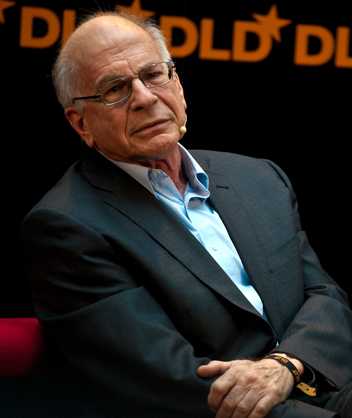

“We can be blind to the obvious, and we are also blind to our blindness.”Daniel Kahneman
Sometime today you will make a decision quickly, feel completely certain about it, and be wrong — and you will not notice any of the three. This is not a flaw in you. It is the standard operating condition of the human mind, and it follows from a fact as strange as anything in the last chapter: you do not have one mind. You have two. They run on different clocks, obey different rules, and are forever handing the controls back and forth without telling you which of them is driving.
By the end of this chapter you will be able to feel the handover happen — we will catch your own mind in the act of being confidently, beautifully wrong. But the question we are really chasing is the practical one, the one that matters at three in the morning when a decision will not let you sleep: if the fast mind is this easily fooled, is there anything a person can actually do about it? The honest answer is yes — but not the answer most people expect. Hold the question. First, meet the fast mind doing the thing it does better than any machine we have ever built: saving a life.
A lieutenant of the fire service leads his men into a burning house — a routine call, the fire in the kitchen at the back. They aim the hose and douse it. The water should kill the flames. It barely touches them. They try again; the fire roars back. The lieutenant stands in the living room, soaked and uneasy, and then — without quite knowing why — hears himself shout: “Everybody out, now!” They run. Seconds after the last man crosses the threshold, the floor they had been standing on collapses. The fire had not been in the kitchen at all. It had been raging in the basement, directly beneath their feet.
Afterward the lieutenant could not explain himself. He spoke of a sixth sense for danger. He could not name what had warned him — only that the room was strangely hot for so small a fire, and eerily quiet, and that something felt deeply, urgently wrong. He had no time to reason. Something in him reasoned faster than thought and simply handed him the verdict: leave. It saved six lives. That “something” is not magic and not a sixth sense. It is one half of your mind — and it is the same half that, working exactly as designed, produces nearly every foolish thing human beings do. Learning to tell its triumphs from its traps is one of the central skills of a thinking life.
The fast mind that saves your life in a burning building is the very same mind that wrecks your judgement in a quiet room. It does not change. Only the situation does.
The Central IdeaSystem 1 and System 2

The clearest map of this divided mind was drawn by the psychologist Daniel Kahneman, in his great late book Thinking, Fast and Slow. He did something rare: he took decades of austere laboratory science and turned it into two characters anyone can hold in mind. He called them, drily, System 1 and System 2.
System 1 is the fast mind. Automatic, effortless, always running. It reads the word in front of you whether you wish to or not. It knows 2 + 2 without calculating, reads anger on a face across a room, swerves the car before you have consciously seen the danger, gave the lieutenant his warning. It is intuition, impression, gut, reflex — and it is, in the deepest sense, who you are when you are not paying attention, which is most of the time.
System 2 is the slow mind. Deliberate, effortful, and lazy. It is what you summon to multiply 17 × 24, to park in a tight space, to weigh a hard choice. It is reason, calculation, self-control. It feels like “you” — the conscious, choosing self. And here is the humbling discovery at the centre of the science: System 2 mostly just goes along for the ride. It believes it is the captain. It is, far more often, a passenger who now and then grabs the wheel.
A necessary caution. System 1 and System 2 are not two places you could point to on a brain scan. They are characters in a story — a way of describing two very different modes of thinking. How the brain physically produces them is still being mapped. The map is not the territory; but it is a very good map.
Where It Came FromThe Friendship That Rewrote a Science
This map was not the work of one mind. It grew from one of the most remarkable partnerships in the history of our field — between Kahneman and the dazzling, mercurial Amos Tversky. In Jerusalem in the late 1960s, two men who could hardly have been more different — Kahneman anxious and self-doubting, Tversky sunlit and supremely sure — found that when they put their heads together, something extraordinary happened. They wrote their famous papers one sentence at a time, aloud, arguing over every word, laughing so loudly that colleagues wondered at the joke, until neither could remember who had thought of what. For years, Kahneman said, they shared a single mind.
Together they overturned a two-hundred-year-old assumption. Economics had been built on a comforting idea: that human beings are rational, weighing costs and benefits to choose what serves them. Experiment by patient experiment, Kahneman and Tversky showed we do nothing of the kind. We are swayed by how a question is worded. We dread losses far more than we prize equal gains. We see pattern in pure chance. We are, in a word, predictably irrational — wrong in ways that follow discoverable laws. In 2002 Kahneman received the Nobel Prize for it. Tversky would surely have shared it, but he had died in 1996, and the prize is not given after death. Kahneman’s grief never quite lifted.
There is no Nobel Prize in Psychology. Kahneman, a psychologist, won the prize in Economics — for demonstrating, with a psychologist’s tools, that the “rational economic human” at the very centre of economic theory does not exist. An entire discipline, behavioural economics, grew from the rubble.
Feel It HappenThe Trap That Catches Almost Everyone
Enough description. Let us catch your own fast mind being certain and wrong. Read slowly, and notice the very first answer that arrives — before you do any arithmetic.
A bat and a ball cost £1.10 together. The bat costs £1.00 more than the ball. How much does the ball cost?
An answer has already arrived, hasn’t it? For most people — including students at Harvard, Princeton, and MIT — it is 10p. Instant, obvious, and wrong. Check it: if the ball were 10p and the bat £1.00 more, the bat would be £1.10, and the two together £1.20 — not £1.10. The ball costs 5p; the bat £1.05.
Here is the whole chapter in miniature. System 1 produced “10p” effortlessly because it looks right. System 2 could have caught the error in three seconds of arithmetic — but System 2 is lazy, and most people never summon it. They feel the answer and go with the feeling. More than half of students at the world’s top universities get this wrong — not because they cannot do the sum, but because they never check.
This is the single most consequential pattern in human judgement. System 1 offers a fast answer to an easy version of the question; System 2 is meant to check it; and System 2, the lazy controller, very often nods it straight through. Kahneman called this the law of least effort — the mind, like water, takes the path that costs it least. Usually that path is good enough. Sometimes it runs you off a cliff. But notice what just happened, because it carries a warning: even now, knowing the trick, the pull toward “10p” has not vanished. Remember that. It will matter greatly before the chapter ends.
Long before the famous books, Kahneman ran a quietly beautiful study. He had people hold strings of numbers in mind and work on them — harder and harder — while a camera filmed their eyes. As the effort rose, their pupils widened, swelling exactly when the task got hard and shrinking the instant they gave up. Effortful thought is so physically real you could read it in the black of an eye, like a meter. System 2 does not run for free; it draws on a limited budget of energy — which is precisely why it is so reluctant to spend it.
That limited budget quietly governs ordinary life. It is why you decide worse when tired, hungry, or distracted — System 2 is depleted, and System 1 runs unchecked. It is why the supermarket puts sweets at the checkout, where your willpower is already spent; why a hard conversation goes better in the morning; why the last hour of a long workday is no time to sign anything. The slow mind is a muscle with a daily allowance, and the fast mind is always ready to take over the moment that allowance runs dry.
How the Fast Mind CheatsAnswering the Question You Weren’t Asked
When System 1 meets a hard question, it has a sly trick. Rather than admit it cannot answer, it quietly swaps the hard question for an easy one it can answer, and hands you that — without ever mentioning the substitution. Once you see this move, you will see it everywhere.
Substitution — when the mind silently replaces a hard question (“Is this investment wise?”) with an easy one (“Do I like the person selling it?”) and answers that, while you feel as though you answered the first.
Ask someone how happy they are with their life, and their answer leans heavily on whether the sun happens to be out, or whether they just found a coin. They cannot compute a whole life’s happiness on the spot — so System 1 answers the easy question, “What is my mood right now?”, and passes it off as a verdict on their entire existence. Ask whether a candidate will lead well, and we substitute “Does this person look like a leader — tall, strong-jawed, confident?” — which is why, unsettlingly, we so often elect a face rather than a mind. From this one move flows much of the great catalogue of biases. Two are worth meeting now.
The vividness trap
We judge how likely a thing is by how easily an example springs to mind. After a single news report of a shark attack or a plane crash, the danger feels enormous — though you are vastly more likely to die in the car on the way to the beach. The vivid, the recent, and the frightening loom far larger than the merely true. Every newsroom and every demagogue has known this in its bones long before it had a name.
The first number wins
Name any number before a judgement, and it secretly drags the answer toward itself — even a number everyone knows is random. People shown a wheel of fortune rigged to stop at 10 or 65, then asked what share of the world’s nations are African, guessed about 25% after seeing 10 and about 45% after seeing 65. A meaningless spin reached into their minds and moved the answer. This is why the first price named in a negotiation matters so much, and why “was £200, now £99” works on you even when you see the trick.
Kahneman and Tversky described a woman, Linda: thirty-one, single, outspoken, very bright; as a student, deeply concerned with discrimination and social justice, a joiner of demonstrations. Which is more probable? (a) Linda is a bank teller. (b) Linda is a bank teller and active in the feminist movement.
Most people — including trained statisticians — choose (b). It simply feels right; the story fits. But (b) cannot be more likely than (a), because every feminist bank teller is, first, a bank teller — a smaller, more specific group can never outnumber the group that contains it. System 1 was not computing probability at all. It was judging how well Linda matched a story, and the vivid, detailed tale felt truer than the bare, broad fact. It almost always does — which is why a good lie is specific, and why we trust the confident anecdote over the dry statistic that should outweigh it a thousandfold.
The Crookedness of ValueWhy Losing £100 Hurts More Than Winning It
Of all they discovered, one finding reaches deepest into a life. I flip a fair coin: heads you lose £100, tails you win £100. Will you play? Almost no one will — though it is a perfectly even bet. How high must the winning side climb before you would take it? For most people, around £200. The pain of losing £100 is roughly twice the pleasure of winning it. Kahneman and Tversky called this loss aversion, and it may be the single most important fact about our relationship with risk.
Loss aversion — the deep lopsidedness in how we feel gains and losses: losing hurts about twice as much as gaining the same thing feels good. We are built less to seek pleasure than to avoid pain.
Loss aversion quietly runs a life. It is why you keep clothes you never wear and a stock that keeps falling — to sell would be to admit the loss, to make it real, and that hurts twice over. It is why people stay too long in jobs and even in relationships that no longer serve them: leaving feels like losing, even when staying costs far more. And because losses bite so much harder than gains, the mere wording of a choice — dressed as a gain or a loss — can flip your decision while the facts stay identical.
A rare disease is expected to kill 600 people. One group chose between programmes framed as lives saved: A. 200 saved for certain. B. a one-third chance all 600 are saved, two-thirds chance none are. Most chose the sure thing, A.
A second group saw the same numbers framed as deaths: C. 400 die for certain. D. a one-third chance nobody dies, two-thirds chance all 600 die. Now most chose the gamble, D.
But A and C are identical (200 live = 400 die), and so are B and D. The facts never moved. Only the words did — “saved” against “die” — and that alone reversed the public’s choice between caution and risk. We do not respond to reality. We respond to the frame we are handed it in. “90% fat-free” sells; “10% fat” does not. A surgery with “90% survival” is chosen far more than the identical “10% mortality” — by patients and by doctors.
The Objection That Matters“Aren’t These Just Clever Puzzles? My Gut Serves Me Fine.”
Here is where an honest reader pushes back, and the objection is strong. These are riddles — bats and balls, made-up diseases, women named Linda. In real life my instincts serve me well. I read people accurately. I make good calls under pressure. Wasn’t the firefighter’s gut exactly right? Yes. He was. And this objection, far from breaking the science, leads to its most useful and hard-won truth — one worth more than the whole catalogue of biases.
It would be a grave error to walk away believing System 1 is the villain and System 2 the hero. Much of human wisdom, much of mastery, lives entirely in the fast, wordless mind. The chess master who sees the best move at a glance, the nurse who senses a baby is sick before any monitor agrees, the experienced driver who reacts before thought — all are riding System 1, and riding it superbly. So the real question is not “is intuition good or bad?” It is the precise one: when can a gut feeling be trusted, and when can it not?
Kahneman, the great skeptic of intuition, and Gary Klein, who spent his career championing expert instinct, argued for years — and then did something rare among scholars: they sat down together to find where they agreed. Their joint answer is one of the most practical findings in all of psychology. A gut feeling can be trusted only when both of two conditions hold:
1. The world it learned in is regular enough to be predictable. Fires, chess positions, and sick infants follow real patterns that repeat. 2. The person had a long chance to learn those patterns through quick, clear feedback. The lieutenant had fought hundreds of fires and seen the outcome of each. When both hold, “intuition” is simply hard-won pattern recognition, and it is often magnificent. When they do not — when the world is noisy and feedback is slow, vague, or absent — what feels like intuition is merely confident guessing in a costume.
This is why a veteran firefighter’s hunch deserves trust, but a stock-picker’s “feel for the market” usually does not: the market is too noisy, its feedback too tangled, for genuine expertise to form. And here is the cruel part — the expert and the fool feel exactly the same certainty from the inside. Confidence is not a signal of accuracy; it is something System 1 manufactures cheaply, in the wise and the deluded alike. The most dangerous people in any field are not the ignorant who know they are guessing, but the confident who are guessing and do not know it. So the question to ask of any strong gut feeling — your own or another’s — is never “how sure does this feel?” but “was this a world, and a life, in which a trustworthy instinct could actually have been built?”
Confidence is a feeling, not a measurement. The expert and the fool feel it exactly alike.
Knowing Doesn’t HelpThe Trap You Cannot Un-See
You might hope that simply learning all this would protect you. It will not — and a pair of plain lines proves why.
This is the humbling crux, and it answers the question we have carried from the first page. Understanding a bias does not make you feel it any less — just as knowing the lines are equal does not make them look equal. You cannot fix faulty thinking by resolving, in the moment, to think harder; System 2 is too lazy and too easily depleted, and the illusion persists regardless. So if knowing isn’t enough, what can a person do? Not nothing — something better than willpower. We will answer it fully at the chapter’s end. First, see where this fast, unstoppable, confident machine does its quietest damage: not in puzzles, but in pain.
Where It Touches Your LifeThe Fast Mind in Prejudice and in Pain
The same machinery that misjudges a bat and a ball misjudges people, and there the cost is not a few pence. Prejudice, at its root, is System 1 doing what it always does — jumping to a fast, confident conclusion from a thin cue, substituting a stereotype for a stranger it has not taken the time to know. (You will hear the echo of the last chapter: a prediction about a person, made before they arrived.) It feels, from the inside, exactly like simply seeing what someone is. That is what makes it so hard to argue with, and so important to catch.
And the fast mind’s habit of leaping to the worst available conclusion is, quite precisely, the engine of a great deal of everyday suffering.
A young woman tells me, still shaking, about the evening her partner did not answer two messages. Within the hour she had arrived, with total conviction, at a finished story: he was leaving her, she was unlovable, she would end up alone. By the time he called — his phone had simply died — she had wept herself sick over a catastrophe that never existed. She is not foolish; she is, in fact, exceptionally bright. What had happened was that her fast mind met a hard question — why hasn’t he replied? — and did what fast minds do: it seized the most vivid, available, emotionally charged answer and presented it as fact, and her slow mind, exhausted and frightened, simply nodded it through. Much of the work we do together is not to make her stop having these instant verdicts — she cannot, no one can — but to teach her slow mind to step in at the crucial moment and ask the question System 1 never asks: “What else could be true?” This, stripped of jargon, is what cognitive therapy is: training System 2 to cross-examine System 1 before the verdict is believed.
A composite vignette. “Catastrophising,” “mind-reading,” and “jumping to conclusions” are among the best-documented thinking patterns in anxiety and depression.
Hold this beside the firefighter, and the whole shape of the chapter appears. His fast verdict — leave — was built in a regular world by long, hard-won experience, and it was right. Her fast verdict — he is leaving me — was built from fear in a moment too tangled to read, and it was catastrophically wrong. Same machinery. Same felt certainty. Opposite worth. The skill is never to silence the fast mind. It is to know, at the moment that matters, which kind of verdict you are holding.
“Can a person actually learn to think well?”
If the fast mind cannot be switched off and the slow mind cannot be trusted to stay awake, is wisdom even possible? Six who have spent their lives on the question.
“You will not debias yourself by reading a list of biases — we have tested it, and it barely helps. What helps is changing the situation: a checklist, a second opinion, a rule that forces the slow mind awake at the moment it matters. Fix the conditions, not the willpower.”
“In therapy we never try to delete the automatic thought. We teach the patient to notice it, name it, and ask what else might be true. You cannot stop the first thought. You can refuse to let it be the last word.”
“And ask why the fast mind reached for that particular verdict. ‘He is leaving me’ is not a random error; it is an old wound predicting its own repetition. The bias has a biography.”
“The Stoics saw this two thousand years ago: between the impression and the assent lies a gap, and in that gap is freedom. You do not control the impression. You control whether you assent to it.”
“Be honest about how little raw self-improvement works. The reliable wins come from systems — institutions, rules, other people checking us. A lone mind resolving to be more rational tomorrow is the least convincing intervention we have.”
“Then wisdom is not a feeling of being right — that feeling is cheap and the fool has it too. Wisdom is the humility to doubt your own certainty at exactly the moments it runs highest. That can be practised. That is a life’s work.”
Myth vs. RealitySetting the Record Straight
What We Like to Believe
“I am a rational person. I weigh the evidence and reason my way to conclusions. My beliefs are the product of thought, and the more certain I feel, the more likely I am to be right.”
What the Evidence Shows
Most of your conclusions arrive first — fast, automatic, from System 1 — and reason often shows up afterward as a lawyer hired to defend them, not a judge weighing them. Confidence is a feeling the fast mind makes cheaply, not a measure of truth. Rationality is not your resting state; it is a deliberate, tiring, occasional achievement — and it is reached more by good systems than by good intentions.
Honesty cuts toward our own science too. The “two systems” picture is a superb teaching tool, but the real brain almost certainly does not split into two neat boxes; thinking is more a continuous blend than a switch. And during psychology’s “replication crisis” of the 2010s, several famous results proved weaker or harder to reproduce than first reported. Kahneman himself publicly accepted that parts of the literature he had relied on — certain “priming” studies — did not hold up: a rare and admirable act of scientific honesty. The core findings of his own work with Tversky — loss aversion, anchoring, the availability and substitution effects — remain robust and widely replicated. But the lesson cuts both ways, and it is the chapter’s own moral applied to itself: even the science of how we are fooled must keep checking whether it has been fooled.
The Answer to Our QuestionWhat You Can Actually Do
We promised, at three in the morning, a real answer to the only question that matters: if the fast mind is this easily fooled, what can a person do? Here it is, and it is not “try harder to be rational.” That is the one thing we now know does not work.
You cannot rewire System 1, and you cannot keep System 2 permanently on guard — it is too lazy and too quickly drained. What you can do is stop fighting the machinery and start designing the moments in which it runs. Three moves, all within reach:
First, learn the danger-signs rather than the bias list. You will never catch every error, but you can learn the handful of situations that reliably ambush the fast mind — a decision made while tired or angry; a number someone put in your head; a vivid story crowding out a dull statistic; a choice that flips when you reword it; a certainty that feels too good to question. When you notice one of those flags, you do not need to be brilliant. You only need to slow down and wake the slow mind on purpose.
Second, build the tripwire into the world, not the will. The surgeon’s checklist, the “sleep on it” rule for big purchases, the trusted friend who must sign off before you send the furious email, the policy of never deciding anything important after nine at night — these work because they do not rely on you being strong in the weak moment. They force System 2 awake from the outside. This is why the wise do not trust their willpower; they engineer around its absence.
Third, ask the one question System 1 never asks: “What else could be true?” The anxious woman uses it on her fear; the doctor uses it on the first diagnosis; you can use it on the gut feeling that someone is hostile, the certainty that you are right. It is the whole of cognitive therapy in five words, and the simplest tool we know for prising the verdict back open before you believe it.
None of this makes you rational. It makes you something more achievable and more valuable: a person who knows the few moments when their own certainty cannot be trusted, and who has arranged their life so that, at exactly those moments, something slows them down. That is not a lesser victory. As we tell our patients and ourselves: you cannot stop the first thought, but you can refuse to let it be the last word. In a creature built the way we are built, that may be as close to wisdom as the equipment allows — and it is enough.
Nothing in life is as important as you think it is, while you are thinking about it.
The lines worth carrying out of this chapter.
- The fast mind speaks first, and the slow mind usually just nods it through. The bat-and-ball trap catches even brilliant people, not because they can’t do the sum, but because they never check.
- When a hard question arrives, the mind quietly answers an easier one — and never tells you it changed the subject. This substitution is the engine beneath most biases.
- Confidence is a feeling, not a measurement. The expert and the fool feel it exactly alike; trust a gut only where the world is regular and you have practised it with honest feedback.
- Losing hurts about twice as much as winning feels good — so how a choice is framed can flip your decision while the facts stay still. Always ask: would I choose this if it were worded the other way?
- Knowing about a trap does not disarm it. You don’t fix thinking by trying harder in the moment — you design the moment: learn the danger-signs, build tripwires into the world, and ask “what else could be true?”
If you keep one sentence: you cannot stop the first thought — but you can refuse to let it be the last word.
Research ReferencesSources & Notes
- ScienceKahneman, D., Thinking, Fast and Slow (2011) — the definitive account of System 1 / System 2.
- ScienceTversky, A. & Kahneman, D., “Judgment under Uncertainty: Heuristics and Biases,” Science 185 (1974) — anchoring, availability, representativeness.
- ScienceTversky, A. & Kahneman, D., “Extensional versus intuitive reasoning: the conjunction fallacy,” Psychological Review (1983) — the Linda problem; and “The framing of decisions,” Science (1981) — the disease problem.
- ScienceFrederick, S., “Cognitive Reflection and Decision Making,” Journal of Economic Perspectives (2005) — the bat-and-ball test.
- ScienceKahneman, D. & Klein, G., “Conditions for Intuitive Expertise: A Failure to Disagree,” American Psychologist (2009).
- ReferenceLewis, M., The Undoing Project (2016) — the Kahneman–Tversky friendship. On cognitive therapy: Beck, A. T., and Burns, D., Feeling Good (1980).
- DebatedOpen Science Collaboration, “Estimating the reproducibility of psychological science,” Science (2015); and Kahneman’s public reckoning with priming research (2017).
Citations support the science presented; a production edition would carry full bibliographic detail and DOIs, externally verified.
Going FurtherRecommended Books & Viewing
Read
- Daniel Kahneman, Thinking, Fast and Slow (2011)
- Michael Lewis, The Undoing Project (2016) — the friendship, beautifully told
- Gary Klein, Sources of Power (1998) — the case for expert intuition
- Richard Thaler & Cass Sunstein, Nudge (2008) — designing the moment
Watch & Listen
- Daniel Kahneman on The Knowledge Project & EconTalk
- Atul Gawande on the surgical checklist (TED / interviews)
- Documentaries on behavioural economics & the “nudge unit”